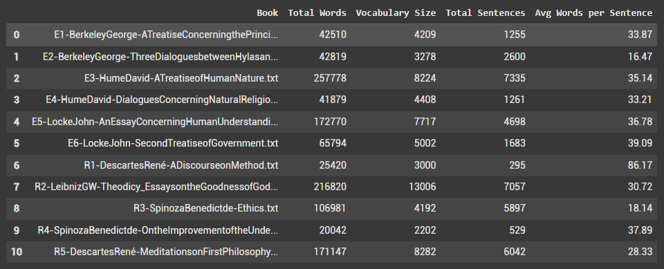
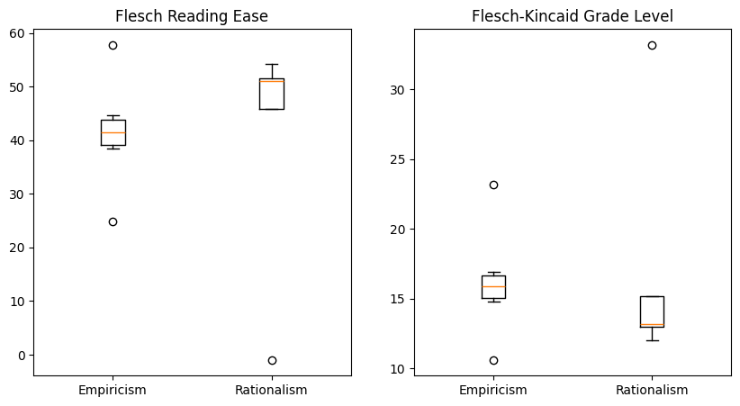

Exploring the Corpus
I’ll start by reframing the research question… (They say good research questions start with “Why?”)
Research Question
Why do people make certain assertions?
The research question, “Why do people make certain assertions?” aims to explore and understand how individuals, groups, or societies think about, acquire, and justify knowledge, including their beliefs about the nature of knowledge, truth, and evidence—what we’ll call “epistemic patterns.” These patterns can be identified by analyzing modern digital discourse from spaces such as social media, customer reviews, or debates. For example, when someone on social media says, “Vaccines are essential because clinical trials show they work”, they’re using an empiricist pattern. They trust evidence and real-world observations. On the other hand, someone who says, “Freedom of speech matters because it’s a natural right”, follows a rationalist pattern. They rely on logical reasoning and principles they believe are naturally true. By studying these patterns, we can better understand how people reason, what influences their beliefs, and how they persuade others.
Epistemic patterns are basically the ways people back up their statements with reasons or evidence. These patterns reflect different beliefs people hold about knowledge, and they’re often grouped into pairs that represent opposite (or) partially opposite ways of thinking:
Empiricism and Rationalism: Empiricism means trusting what we can see, hear, or test through experience or experiments. Rationalism, on the other hand, means relying more on logical thinking or ideas that we think are naturally true, without needing proof from experience.
Foundationalism and Coherentism: Foundationalism believes knowledge should start from basic truths, things we consider obviously true, and build from there. Coherentism says knowledge is valid if our ideas consistently fit together, like pieces in a puzzle.
Internalism and Externalism: Internalism suggests knowledge depends mostly on what’s happening inside our minds, like our personal reasons or justifications. Externalism argues that knowledge also relies on outside facts or conditions we might not be fully aware of.
Skepticism and Fallibilism: Skepticism questions whether we can ever truly know something for sure. Fallibilism agrees that absolute certainty is rare but adds that we can still trust our knowledge as long as we’re open to revising it when new evidence comes along.
While these pairs represent opposing or partially opposing viewpoints, real-world reasoning rarely fits neatly into one category. Instead, people’s beliefs and arguments usually fall somewhere along a spectrum, blending different proportions of these ideas.
For starters, this project is focused on identifying proportions of rationalism and empiricism, although all other schools of thought will be systematically included in future phases of research.
The initial goal of this project is to build a reliable classifier that can identify the proportions of rationalism and empiricism in modern texts. Inspired by the Philosophy Data project (https://philosophydata.com/), which focuses broadly on identifying philosophical tendencies, our project is specifically interested in detecting epistemic tendencies and knowledge patterns. To achieve this, we’ll use transformer-based language models like BERT and RoBERTa. We might also experiment with GPT models, although they’re not primarily designed for classification tasks. These models are pre-trained on large-scale text data, and we’ll further fine-tune them on carefully annotated examples of rationalist and empiricist language to improve their accuracy and performance for our specific classification task.
The classification and/or detection of epistemological tendencies in discourse using language models holds significant practical potential. For example, in politics, identifying how people reason helps analysts understand what’s behind different policies or voting behaviors. In business, knowing people’s reasoning styles can help predict how consumers make decisions or how they’ll respond to marketing. In education, recognizing student’s reasoning patterns can guide teachers in designing better lessons to develop critical thinking and evidence-assessment skills. In journalism and media, spotting these patterns can help identify misinformation or persuasive techniques, which leads to clearer and more informed public discussions.
The Corpus
To explore this research question, an initial corpus has been compiled using texts that explicitly discuss rationalism and empiricism. As a starting point, I’m using the corpus from the Philosophy Data Project (credits: https://philosophydata.com/bibliography.html), which includes works by key rationalist and empiricist philosophers. These texts are freely accessible through Project Gutenberg. Thanks to both Philosophy Data Project and Project Gutenberg for making my life easier :)
Books discussing Empiricism:
Berkeley, George. A Treatise Concerning the Principles of Human Knowledge. 2009. Project Gutenberg, www.gutenberg.org/ebooks/4723.
Berkeley, George. Three Dialogues between Hylas and Philonous in Opposition to Sceptics and Atheists. 2009. Project Gutenberg, www.gutenberg.org/ebooks/4724.
Hume, David. A Treatise of Human Nature. 2003. Project Gutenberg, www.gutenberg.org/ebooks/4705.
Hume, David. Dialogues Concerning Natural Religion. 2009. Project Gutenberg, www.gutenberg.org/ebooks/4583.
Locke, John. An Essay Concerning Human Understanding. 2004. Project Gutenberg, www.gutenberg.org/ebooks/10615. 2 vols.
Locke, John. Second Treatise of Government. 2010. Project Gutenberg, www.gutenberg.org/ebooks/7370.
Books discussing Rationalism:
Descartes, René. A Discourse on Method. Translated by John Veitch. 2008. Project Gutenberg, www.gutenberg.org/ebooks/59.
Descartes, René. Meditations on First Philosophy. Translated by Michael Moriarty, Oxford University Press, 2008.
Leibniz, G.W.. Theodicy: Essays on the Goodness of God, the Freedom of Man, and the Origin of Evil. Translated by E.M. Huggard. 2005. Project Gutenberg, www.gutenberg.org/ebooks/17147.
Malebranche, Nicolas. The Search After Truth. Edited by Thomas M. Lennon and Paul J. Olscamp, Cambridge University Press, 1997.
Spinoza, Benedict de. Ethics. Translated by R.H.M. Elwes. 2003. Project Gutenberg, www.gutenberg.org/ebooks/3800.
Spinoza, Benedict de. On the Improvement of the Understanding. Translated by R.H.M. Elwes. 1997. Project Gutenberg, www.gutenberg.org/ebooks/1016.
However, there’s an important consideration: the linguistic patterns in these historical texts may differ significantly from those used in modern discourse. Some scholars argue that the way we communicate and reason today has evolved, raising questions about whether these older texts can effectively represent modern epistemic tendencies. A couple of ideas I currently have are:
Using the current texts to build an initial model for labeling modern texts, then refining the results through human supervision.
Expanding the corpus with texts from PhilPapers, a comprehensive index and bibliography of philosophy, which covers philosophical concepts across various contexts and domains.
Corpus Summary
I have titled the file names starting with “E” for the empiricist texts and “R” for the rationalist texts. A summary of the corpus can be found in the image below:

The empiricist texts, Hume’s “A Treatise of Human Nature” (E3) and Locke’s “An Essay Concerning Human Understanding” (E5), and the rationalist texts, Leibniz’s “Theodicy” (R2) and Descartes’s “Meditations on First Philosophy” (R5) are significantly longer in their respective corpora with a word count of more than 170000.
Leibniz’s “Theodicy” has a huge vocabulary size of 13,006 unique words, indicating a highly diverse lexicon and possibly complex conceptual content. Hume’s “A Treatise of Human Nature”, Descartes’s “Meditations on First Philosophy” and Locke’s “An Essay Concerning Human Understanding” also have a considerable vocabulary.
Empiricist texts generally range around 30-40 words per sentence, whereas rationalist texts show more variation, some with extremely long sentences (Descartes) and some shorter (Spinoza’s “Ethics”).
Corpus Readability

Rationalist texts tend to be a bit easier to read. Empiricist texts are somewhat harder, meaning they’re probably denser or use more complex explanations. I believe these differences suggest that rationalist and empiricist authors write differently.
Generally, a Flesch reading ease score between 60 and 70 and a Flesch-Kincaid grade level of 8 are considered ideal for most content. However, our corpus does not fall into these benchmarks.
Book-wise Word Frequencies
In the empiricist texts, unique words like “sense”, “perceived”, “experience”, and “objects” highlight their focus on sensory evidence and observation. Rationalist texts use distinct words such as “certain”, “truth”, “reason” and references to “god” reflecting their emphasis on logical certainty and innate truths. These unique words clearly show the differences in how each group thinks about and justifies knowledge. However, both corpora share some common high-frequency words, such as “one”, “idea” and “mind”. What do you think about this overlap?
Word Frequency
The above bar graphs show the frequency of the top 10 words from both corpora rather than book-wise word frequencies. I think the book-wise word frequencies gave us more insights about similarities within corpora and distinction between empiricist and rationalist texts.
Word Cloud
The word clouds allow us to examine the top 200 words in both the empiricism and rationalism corpora. So, what do you think?
Bigram Frequency
Common pairs in the empiricism corpus include “simple ideas”, “every one”, “one another”, and “cause effect”. Frequent pairs in the rationalist texts are “objections replies”, “human body”, “human mind”, “idea god” and “clearly distinctly”. Although there are no identical pairs found in both corpora, Is there a linguistic distinction?
(I’m probably going to need help from a linguistics major for this one!)
Trigram Frequency
Again, there are no identical trigrams found in both corpora. However, interpreting these trigrams as meaningful phrases is tricky since stop words were removed. I tried analyzing without removing stop words, but then most trigrams ended up containing only stop words. Let me know what you think!